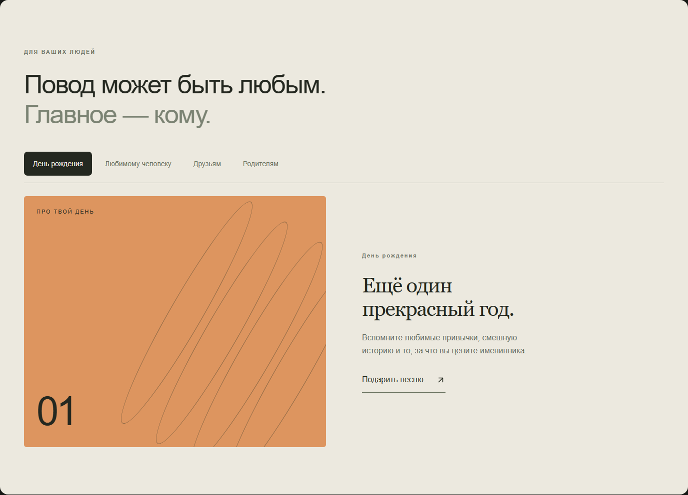
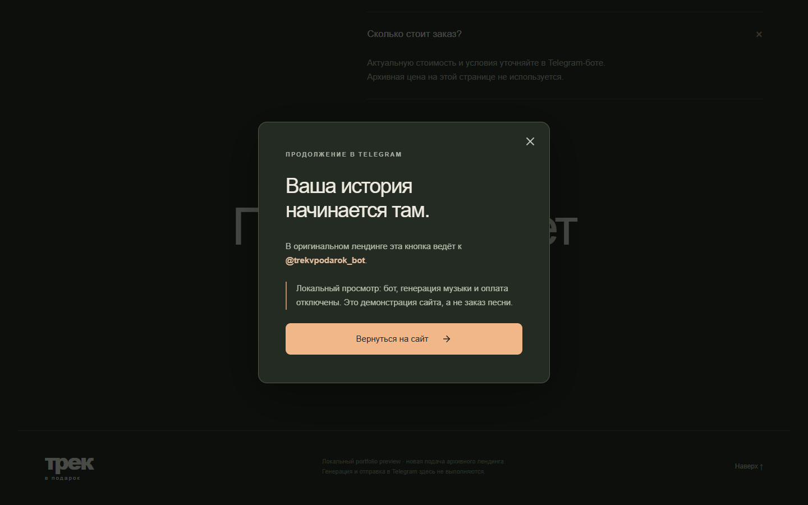

Расскажите о человеке
Имя, повод и несколько деталей, которые узнает только адресат.

PERSONAL SONG · TELEGRAM SERVICE
Лендинг помогает выбрать повод, собрать личные детали и продолжить реальный сценарий в Telegram.
Не генератор музыки.
Личное издание одной истории — для одного человека.
Полный проход: первый экран, четыре повода, процесс, FAQ и честное продолжение в Telegram.

Имя, повод и несколько деталей, которые узнает только адресат.
Романтика, благодарность или общая шутка становятся направлением текста.
Сайт подготавливает историю и ведёт к исходному интерфейсу сервиса.

Project / Overview
Пользователю нужно понять, что входит в музыкальный подарок и как заказать его.
Собрал страницу с примерами, описанием форматов и последовательным путём к заявке.
Посетитель знакомится с услугой и может перейти к оформлению запроса.
Примеры и понятный путь заказа помогают выбрать подходящий формат персонального подарка.
Есть задача?